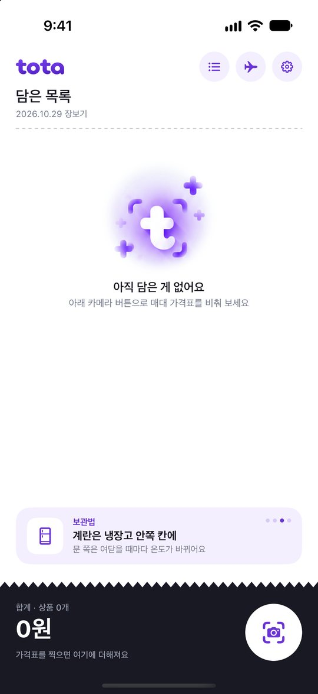
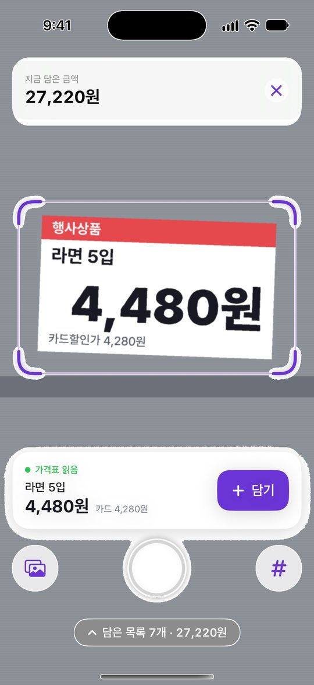
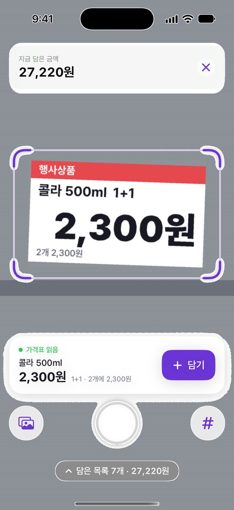
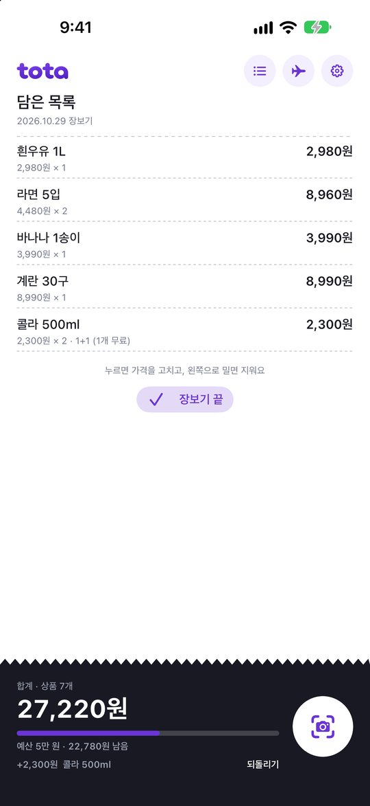
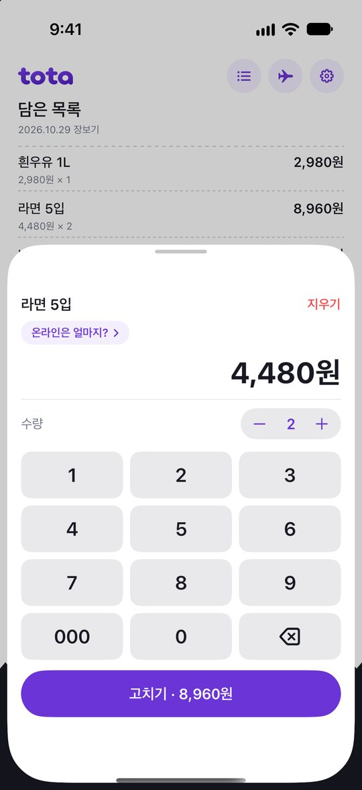
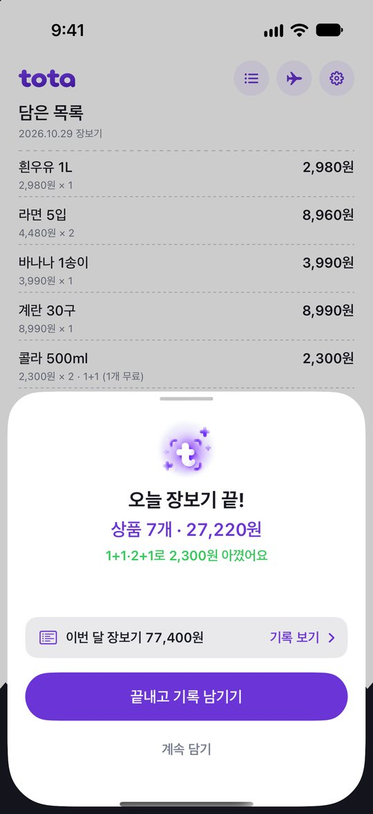
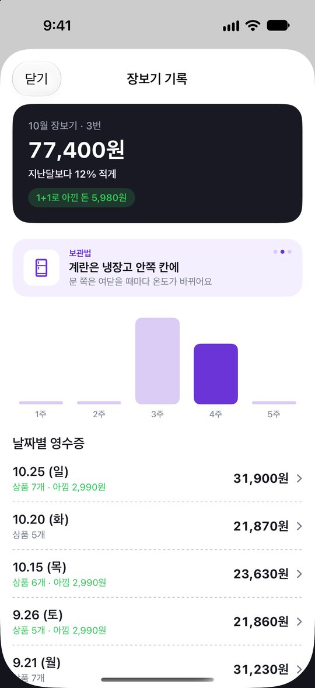
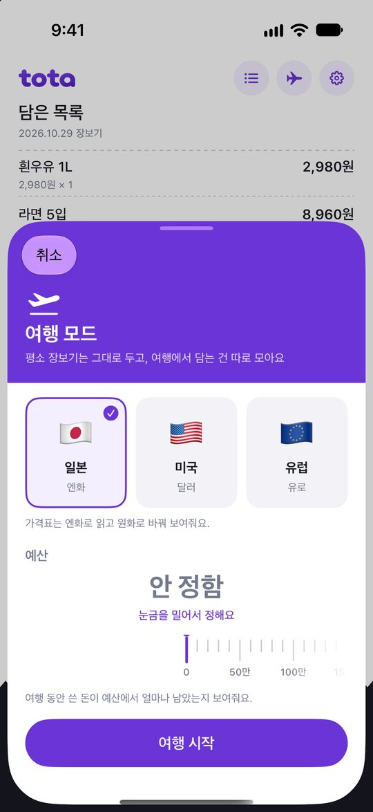
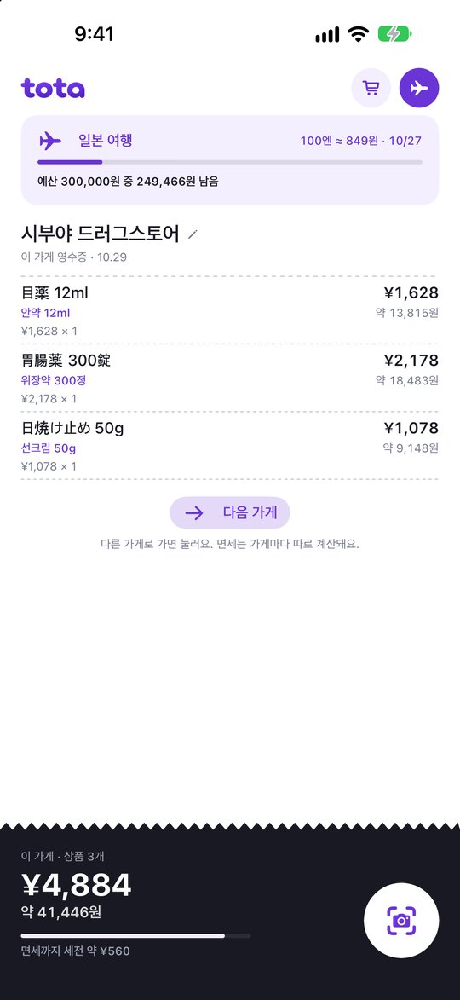

tota 사용 설명서
마트에서 가격표를 카메라로 비추면, 담은 금액이 바로 쌓여요. 계산대 가기 전에 얼마인지 미리 알 수 있어요.
1카메라 버튼
2가격표 비추기
3담기
01
처음 켜면
가입이나 로그인 없이 바로 시작해요. 처음 화면은 비어 있는 장바구니예요.
- 오른쪽 아래 카메라 버튼을 누르면 가격표를 비추는 화면이 열려요.
- 아래 검은 영역에 지금까지 담은 합계가 보여요.
- 장바구니가 비어 있을 땐 합계 위 카드에 이달의 제철 식재료, 지난 장보기, 보관법, 사용 팁이 번갈아 나와요. 카드를 누르면 다음 내용으로 넘어가요.
- 오른쪽 위 버튼은 차례로 기록 여행 설정이에요.

02
가격표 비추기
가격표를 화면 가운데 보라색 틀 안에 맞추면, 셔터를 누르지 않아도 알아서 읽어요.
- 읽으면 아래에 "가격표 읽음" 카드가 떠요. 상품 이름과 가격을 확인하고 + 담기를 누르면 끝이에요.
- 카드 할인가가 있으면 옆에 작게 같이 보여줘요. 합계엔 일반 가격이 들어가요.
- 담을 때마다 위쪽 합계가 바로 올라가요.
- 셔터 아래 "담은 목록"을 밀어 올리면, 찍는 중에도 지금까지 담은 걸 볼 수 있어요.
잘 안 읽힐 때
- 셔터를 눌러 한 장 찍으면 더 꼼꼼하게 읽어요.
- 오른쪽 # 버튼을 누르면 키패드로 가격을 바로 넣을 수 있어요.
- 왼쪽 사진 버튼으로 앨범에 있는 가격표 사진을 불러올 수도 있어요.

03
1+1 · 2+1 행사
가격표에 1+1, 2+1이 있으면 알아서 계산해요.
- 담기 한 번에 한 세트가 들어가요. 1+1이면 2개, 2+1이면 3개가 담기고, 공짜로 받는 만큼은 합계에서 빠져요.
- 목록에서 수량을 바꿔도 행사 규칙대로 다시 계산해요.
- "2개 5,000원" 같은 묶음 가격이면, 하나씩 담을지 묶음으로 담을지 물어봐요.

04
담은 목록
카메라를 닫으면 담은 상품이 영수증처럼 쌓여 있어요.
- 방금 담은 걸 빼고 싶으면 합계 옆 되돌리기를 누르세요.
- 상품을 왼쪽으로 밀면 지울 수 있어요.
- 상품을 누르면 가격, 수량, 이름을 고칠 수 있어요.
- 합계 아래 예산 정하기를 누르면 장보기 예산을 정해요. 80%를 넘으면 주황, 넘치면 빨강으로 알려주고 촬영 화면 위에도 남은 예산이 보여요.

05
고치기 · 온라인은 얼마지?
목록에서 상품을 누르면 열리는 화면이에요.
- 키패드로 가격을 고치고, − +로 수량을 바꿔요.
- 맨 위 이름을 눌러 상품 이름을 고칠 수 있어요. 잘못 읽힌 이름을 몇 글자 고치면 tota가 기억했다가, 다음에 같은 이름이 잘못 읽히면 알아서 고쳐요.
- "온라인은 얼마지?"를 누르면 그 상품 이름으로 온라인 쇼핑몰을 검색해요. 앱을 나가지 않고 바로 비교할 수 있어요.
쇼핑몰 바꾸기 · 오른쪽 위 설정에서 어느 쇼핑몰에서 찾을지 고를 수 있어요.

06
장보기 끝
목록 아래 장보기 끝을 누르면 오늘 장보기를 정리해 줘요.
- 상품 개수, 합계, 1+1·2+1로 아낀 돈을 보여줘요.
- 끝내고 기록 남기기를 누르면 오늘 장보기가 기록에 남고 장바구니가 비워져요.
- 아직 더 살 게 있으면 계속 담기를 누르세요.

07
장보기 기록
오른쪽 위 기록 버튼을 누르면 지난 장보기를 볼 수 있어요.
- 이번 달에 몇 번, 얼마나 썼는지와 지난달보다 늘었는지 줄었는지 보여줘요.
- 주별 막대로 언제 많이 샀는지 한눈에 볼 수 있어요.
- 날짜별 영수증을 누르면 그날 산 상품이 나와요.
- 같은 상품을 지난번과 다른 가격에 샀으면 가격이 바뀐 상품으로 알려줘요.

08
해외여행 장보기
일본, 미국, 유럽 마트에서도 쓸 수 있어요. 평소 장바구니는 그대로 두고 여행에서 담은 건 따로 모아요.
- 오른쪽 위 여행 버튼을 누르고 나라를 고르세요.
- 예산은 눈금을 밀어서 정해요. 금액 아래에 여행지 돈으로 얼마쯤인지 같이 보여줘요. 안 정해도 돼요.
- 그 나라 가격표(엔·달러·유로)를 읽고, 오늘 환율로 바꾼 원화를 같이 보여줘요.
- 외국어 상품 이름 아래에 우리말 번역이 보라색으로 붙어요. 처음 한 번은 iPhone이 번역 언어 파일을 받을지 물어볼 수 있어요(iOS 18 이상).
- 가게를 옮기면 다음 가게를 눌러 가게별로 나눠 볼 수 있어요.
- 일본에선 한 가게에서 면세 기준 금액(세전 5,000엔)까지 얼마 남았는지 막대로 보여줘요.
- 여행 중엔 여행 버튼이 보라색으로 채워져요. 그 버튼을 누르면 여행을 끝낼 수 있고, 장바구니 버튼을 누르면 평소 장보기로 돌아가요.


09
가격표가 잘 읽히는 법
- 가격표 하나만 틀 안에 꽉 차게 비춰 주세요. 옆 가격표가 같이 들어오면 다른 숫자를 읽을 수 있어요.
- 조명이 반사돼 숫자가 하얗게 날아가면, 폰을 살짝 기울여 주세요.
- 너무 가까우면 초점이 안 맞아요. 한 뼘쯤 떨어져서 비춰 주세요.
- 읽은 가격이 이상하면 담기 전에 카드에 보이는 숫자를 꼭 확인해 주세요.